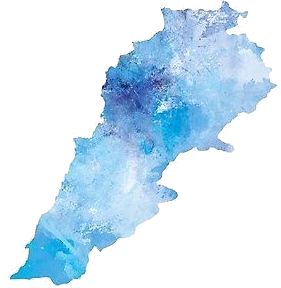

How many Lebanese families left their homes to live and succeed abroad.
And the tale of the many different refugees that sought asylum in Lebanon.

How it began
Emigration has loomed over Lebanon for centuries up till this very day.
One of the many reasons that cause such great waves of immigrations are wars and instability of the country.
The global peace index can reveal the fragile sense of security the Lebanese have.
According to countryeconomy.com, Lebanon ranked 146 out of 163 countries in the global peace index for the year 2020 . Additionally, it consistently ranks in the fourth quartile across all the recorded years.
Below is a line plot showing the different GPI and GPR values for Lebanon across the years*GPR: Global Peace ranking: shows the rank of lebanon between 163 countries. The smaller rank the better.
*GPI: GLobal Peace Index: measures three indices the ‘ongoing conflict’, ‘safety and security’, and ‘militarisation’. This scale ranges from 1 to 5 with 5 indicating a safe country.
Although there were many periods of prosperity in Lebanon, the Lebanese economy is quick to collapse if any disturbance occurs in the region.
One evidence of such fragility is the increasing Lebanese debt stock as reported in a study performed by the Credit Libanais Bank.
These problems along with many others resulted in many waves of immigration from Lebanon, an the Lebanese diaspora spread across the globe.
The implications
With each individual that left Lebanon, the country lost a valuable member of its society.
Many of these immigeants suceeded in their profession out there, and
some of these Lebanese immigrants and their descendants still preserve their heritage, and are proud of their roots. However, others have lost this kinship.
It is time to shed light on the Lebanese diaspora, and help reconnect all of these immigrants to their home country.
Meet some Lebanese people
Every time you visit this page, we will show you peaople that suceeded in their field in different countries. All of these people have Lebanese origins.
Now, we are viewing the country of